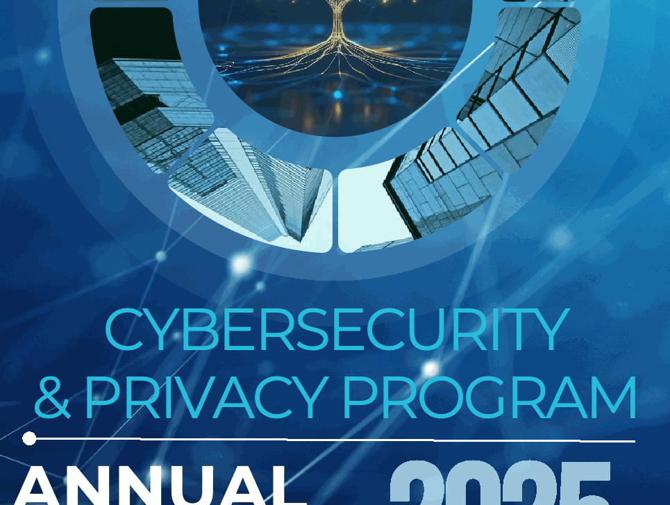
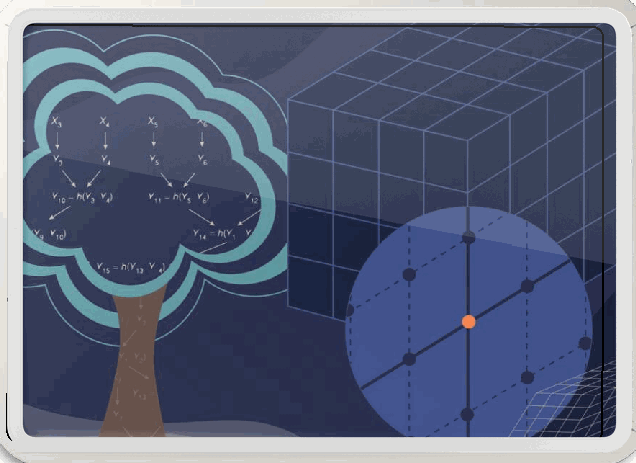

NIST Special Publication · PDF 原文抽出
Fiscal Year 2025 Annual Report for NIST Cybersecurity and Privacy Program
NIST サイバーセキュリティ・プライバシープログラム 2025 会計年度年次報告書
NIST SP 800-238（Fiscal Year 2025 Annual Report for NIST Cybersecurity and Privacy Program）の英文と日本語訳を段落ごとに並べた閲覧用ページです。NIST のサイバーセキュリティおよびプライバシープログラムの 2025 会計年度の活動をまとめた年次報告書です。 翻訳は有志による非公式のもので、NIST および米国商務省が作成・承認・推奨したものではありません。要件の確認にはNIST の正式版 PDFを参照してください。
PDF から抽出した原文は原本との照合待ちです。
PDF p.1: The lower-cover image block is a partial crop that duplicates overlaid title text; image fidelity remains unresolved.
PDF pp.4, 9, 11, 13, and 15: Source headshots or section illustrations are visible but lack corresponding extracted figure blocks.
SPECIAL PUBLICATION 800-238
特別刊行物 800-238
青いデジタル風景に、ネットワーク状の樹木を描いたイラスト。

Cybersecurity & Privacy Program Annual Report 2025の題字を含む表紙下部の画像。
CYBERSECURITY & PRIVACY PROGRAM
サイバーセキュリティ & プライバシープログラム
ANNUAL REPORT
年次報告書
NIST Special Publication 800
NIST SP 800-238
NIST 特別刊行物 800
NIST SP 800-238
Fiscal Year 2025 Annual Report for NIST Cybersecurity and Privacy Program
2025会計年度 NISTサイバーセキュリティおよびプライバシープログラム年次報告書
Patrick O’Reilly, Editor Computer Security Division Information Technology Laboratory
Patrick O’Reilly、編者 コンピュータセキュリティ部門 情報技術研究所
Kristina Rigopoulos, Editor Applied Cybersecurity Division Information Technology Laboratory
Kristina Rigopoulos、編者 応用サイバーセキュリティ部門 情報技術研究所
This publication is available free of charge from: https://doi.org/10.6028/NIST.SP.800-238
本出版物は以下より無料で入手可能です：https://doi.org/10.6028/NIST.SP.800-238
May 2026
2026年5月
［米国商務省の紋章。公的な標章のため、この非公式サイトには掲載していない。原本 PDF を参照。］
Table of Contents
目次
Foreword 04
序文 04
Cryptography 05
暗号技術 05
Cybersecurity & AI 07
サイバーセキュリティとAI 07
Education & Workforce 09
教育・人材育成 09
Hardware & Software Security 11
ハードウェアとソフトウェアのセキュリティ 11
Infrastructure Security 13
インフラストラクチャセキュリティ 13
Risk Management 15
リスクマネジメント 15
FOREWORD
序文
男性の白黒の顔写真。 ［人物の写真。人物が写っているため、この非公式サイトには掲載していない。原本 PDF を参照。］
Julie Chua
Julie Chua
Chief, Applied Cybersecurity Division
応用サイバーセキュリティ部門長
Jon Boyens
Jon Boyens
Acting Chief, Computer Security Division
コンピュータセキュリティ部門長代理
Each year, as we reflect on memories and accomplishments, we are reminded of the enduring legacy and evolution of our work at NIST. This Annual Report is our twenty-third in a row…and a lot has changed throughout the years. One thing that has not wavered is our ability to understand the complex cybersecurity landscape and pivot our research and work accordingly.
毎年、思い出や実績を振り返る中で、私たちはNISTにおける活動の永続的な遺産と進化を改めて実感する。本年次報告書は23年連続の発行となり…この年月の中で多くの変化があった。その中で決して揺らぐことがなかったのは、複雑なサイバーセキュリティの情勢を理解し、それに応じて研究や活動の方向性を転換する私たちの能力である。
Amid evolving threats, rapid technological advancements, and an increasingly intricate global ecosystem, our cybersecurity and privacy NIST colleagues and external partners, including collaborations at the NIST National Cybersecurity Center of Excellence (NCCoE), accomplished so much this year. They delivered important publications and guidelines, hosted events, fostered critical collaborations, and advanced innovative research that strengthens global cybersecurity, standards, and privacy. Our work cut across disciplines at NIST, including our work in standards, risk management, supply chain, small business, and privacy. These accomplishments are a testament to the unwavering dedication and resilience of our talented teams, partners, and stakeholders.
進化する脅威、急速な技術の進歩、そしてますます複雑化するグローバルなエコシステムの中で、NIST国立サイバーセキュリティ推進センター（NCCoE）における協業をはじめとする、サイバーセキュリティおよびプライバシー分野のNISTの同僚や外部パートナーは、今年度きわめて多くの成果を上げた。彼らは重要な出版物やガイドラインを発行し、イベントを主催し、重要な連携を促進し、世界のサイバーセキュリティ、標準、プライバシーを強化する革新的な研究を前進させた。私たちの取り組みは、標準、リスク管理、サプライチェーン、中小企業、プライバシーにおける活動を含め、NISTの分野横断的なものとなった。これらの成果は、才能豊かなチーム、パートナー、そしてステークホルダーの揺るぎない献身と回復力の証である。
As we look to the future, we are filled with profound optimism. The foundation we have built positions us not only to address today’s challenges, but to anticipate and shape tomorrow’s opportunities in cybersecurity and privacy. Thank you for your continued support and engagement with NIST’s vital mission.
将来を見据えるにあたり、私たちは大きな希望を抱いている。私たちが築き上げてきた基盤は、今日の課題に対処するだけでなく、サイバーセキュリティとプライバシーにおける明日の機会を先取りし、形作っていくことを可能にする。NISTの極めて重要な使命に対する皆様の継続的なご支援とご参画に感謝申し上げる。
Julie and Jon
Julie and Jon
Cryptography
暗号技術
NIST has fostered the development of trustworthy cryptographic techniques and technologies for over 50 years through open, collaborative processes that incorporate input and expertise from industry, government, and academia. Our cryptographic standards, guidelines, and test methods help secure global e-commerce and protect U.S. federal information.
NISTは、産官学からの意見や専門知識を取り入れたオープンで協力的なプロセスを通じて、50年以上にわたり信頼できる暗号手法および技術の開発を促進してきた。私たちの暗号標準、ガイドライン、試験方法は、世界的な電子商取引の安全確保と米国連邦情報の保護に貢献している。

暗号技術を象徴する図。雲形の樹木と立方体状の座標図が描かれている。
Credit: NIST
画像提供：NIST
Cryptography
暗号技術
FISCAL YEAR
会計年度
2025
2025
Major accomplishments:
主な成果:
•Continued to advance post-quantum cryptography (PQC) standards by announcing a fifth PQC algorithm for standardization, Hamming Quasi-Cyclic (HQC), and working with industry and standards development organizations to facilitate PQC adoption in critical security technologies.
•耐量子計算機暗号（PQC）標準の推進を継続した。具体的には、標準化に向けた5番目のPQCアルゴリズムであるHamming Quasi-Cyclic（HQC）を発表し、重要セキュリティ技術へのPQC導入を促進するために業界や標準化団体と協力した。
•Released a timeline for the migration to PQC standards, the deprecation of quantum-vulnerable algorithms after 2030, and the required use of quantum-resistant algorithms by 2035.
•PQC標準への移行、2030年以降の量子に対して脆弱なアルゴリズムの非推奨化、および2035年までの耐量子アルゴリズムの使用義務化に向けたタイムラインを公開した。
•Published the lightweight cryptography standard Ascon in SP 800-232 after a five-year global competition to provide strong, efficient, side-channel-resistant protection for billions of Internet of Things (IoT) and constrained devices for which traditional cryptography is too costly.
•従来の暗号技術ではコストがかかりすぎる数十億台ものモノのインターネット（IoT）機器および制約のあるデバイスに対して、強力で効率的かつサイドチャネル攻撃耐性のある保護を提供するため、5年間にわたる世界的なコンペティションを経て、SP 800-232で軽量暗号標準Asconを公開した。
•Strengthened trust in the security of commercial cryptographic products through testing under the Cryptographic Module Validation Program with improved workflows and processes to reduce the time for validation for the 262 products tested in FY 2025.
•暗号モジュール検証プログラム（Cryptographic Module Validation Program）に基づく試験を通じて商用暗号製品のセキュリティに対する信頼を強化し、ワークフローとプロセスの改善により、2025年度（FY 2025）に試験された262製品の検証時間を短縮した。
•Expanded collaboration on the Migration to PQC Project, with 50+ organizations working to demonstrate practices to ease migration to NIST PQC standards. This included demonstrations of the functionality of some collaborator discovery and inventory tools (and how the tool outputs could be used to prioritize migration decisions). Collaborators also demonstrated the interoperability of PQC algorithms to prepare for their use in products and services. (NCCoE)
•「PQCへの移行（Migration to PQC）」プロジェクトにおける連携を拡大し、50以上の組織がNIST PQC標準への移行を円滑にする実践例の実証に取り組んだ。これには、一部の協力組織によるディスカバリおよびインベントリツールの機能（ならびにツールの出力を移行判断の優先順位付けにどのように活用できるか）の実証が含まれていた。協力組織はまた、製品やサービスでの利用に備えるため、PQCアルゴリズムの相互運用性を実証した。(NCCoE)
•Expanded automated cryptographic algorithm testing to deliver nearly 1 million test vectors and validate 1,598 implementations while facilitating the migration to PQC standards with 170 Module-Lattice-Based Digital Signature Algorithm (ML-DSA) (from FIPS 204) and Module-Lattice-Based Key Encapsulation Mechanism (ML-KEM) (from FIPS 203) validations.
•自動化された暗号アルゴリズム試験を拡充して100万件近くのテストベクタを提供し、1,598件の実装を検証するとともに、モジュール格子ベースのデジタル署名アルゴリズム（ML-DSA）（FIPS 204より）およびモジュール格子ベースの鍵カプセル化メカニズム（ML-KEM）（FIPS 203より）に関する170件の検証を通じてPQC標準への移行を促進した。
Cybersecurity & AI
サイバーセキュリティとAI
Artificial intelligence (AI) systems are being used and deployed on an increasing number of tasks, including processing and analyzing large quantities of data. AI systems introduce new opportunities and potential security concerns. This focus area explores the management of risks to people and organizations who use AI systems.
人工知能（AI）システムは、大量のデータの処理や分析を含め、ますます多くのタスクで使用および配備されている。AIシステムは新たな機会とともに、潜在的なセキュリティ上の懸念をもたらす。この重点分野では、AIシステムを利用する人々や組織に対するリスクの管理について探究する。
赤と青に光る回路を背景に、回路で描かれた脳のイラスト。
Cybersecurity & AI
サイバーセキュリティとAI
FISCAL YEAR
会計年度
2025
2025
Major accomplishments:
主な成果:
•Published a concept paper and generated critical input for the Cybersecurity Framework Profile for AI through a workshop and multiple working meetings involving thousands of participants. (NCCoE)
•数千人の参加者が関与したワークショップや複数回の作業部会を通じて、コンセプトペーパーを公表し、AI向けサイバーセキュリティフレームワークプロファイルの策定に向けて重要な意見を集約した。(NCCoE)
•Released Adversarial Machine Learning: A Taxonomy and Terminology of Attacks and Mitigations, which is widely cited and discussed.
•広く引用され議論されている『敵対的機械学習：攻撃と緩和策の分類および用語』を公開した。
•Collected real-world data from experiments on a ‘smart road’ to accelerate the development of new-generation benchmark datasets to help improve the robustness of AI models used in self-driving cars. (NCCoE)
•自動運転車で使用されるAIモデルの堅牢性向上を支援する次世代ベンチマークデータセットの開発を加速するため、「スマートロード」での実験から実世界データを収集した。(NCCoE)
•Kicked off the Control Overlays for Securing AI Systems (COSAiS) project to develop a series of overlays for securing AI systems using NIST’s SP 800-53 controls, SP 800-218A, Draft AI 800-1, and AI 100-2e2025 to facilitate the responsible and secure adoption of AI technologies.
•AI技術の責任ある安全な導入を促進するため、NISTのSP 800-53管理策、SP 800-218A、Draft AI 800-1、およびAI 100-2e2025を使用してAIシステムを保護するための一連のオーバーレイを開発する、AIシステム保護のための管理策オーバーレイ（COSAiS）プロジェクトを開始した。
•Published an Institute of Electrical and Electronics Engineers (IEEE) Computer article describing a unified measurement and visualization framework that quantitatively characterizes the strength, weakness, transferability, and explainability of machine-learning training and testing datasets.
•機械学習のトレーニングおよびテストデータセットの強み、弱み、転移性、および説明可能性を定量的に特徴付ける統合された測定および可視化フレームワークについて説明した、米国電気電子学会（IEEE）の『Computer』誌の記事を発表した。
•Published findings about a model-agnostic dataset reduction method using Combinatorial Frequency Differencing to identify distinguishing feature values at a peer-reviewed conference.
•査読付き会議において、識別的な特徴値を特定するために組合せ頻度差分（Combinatorial Frequency Differencing）を用いた、モデル非依存のデータセット削減手法に関する知見を発表した。
•Published a paper in the Association for Computing Machinery Workshop on Computer Security on threat modeling for security analysis of machine learning systems.
•米国計算機学会（ACM）のコンピュータセキュリティに関するワークショップにおいて、機械学習システムのセキュリティ分析のための脅威モデリングに関する論文を発表した。
•Published a paper on detecting hallucinations in a Conference on Data and Applications Security and Privacy proceedings, winning a “Best Paper Award.”
•Conference on Data and Applications Security and Privacyのプロシーディングスにおいてハルシネーションの検出に関する論文を発表し、「最優秀論文賞（Best Paper Award）」を受賞した。
•Published a paper on automated program repair in IEEE Computer.
•IEEE Computerに自動プログラム修復に関する論文を発表した。
•Continued to develop and improve Dioptra, a software test platform for assessing various characteristics of AI systems. (NCCoE)
•AIシステムのさまざまな特性を評価するためのソフトウェアテストプラットフォームであるDioptraの開発および改善を継続した。(NCCoE)
Education & Workforce
教育・人材育成
The Education and Workforce focus area coordinates programs across sectors to grow and sustain a skilled cybersecurity workforce. This work also includes increasing public awareness of cybersecurity, cybersafety, and cyberethics and disseminating cybersecurity technical standards and best practices for individuals and enterprises.
教育・人材育成の重点分野では、熟練したサイバーセキュリティ人材を育成・維持するために各セクター間のプログラムを調整している。この取り組みには、サイバーセキュリティ、サイバーセーフティ、サイバー倫理に関する一般の認識向上や、個人および企業に向けたサイバーセキュリティの技術基準やベストプラクティスの普及も含まれる。
Credit: Felicia Rateliff
画像提供：Felicia Rateliff
Education & Workforce
教育・人材育成
FISCAL YEAR
会計年度
2025
2025
Major accomplishments:
主な成果:
•NICE’s Community Coordinating Council released three new resources in support of the NICE Strategic Plan: a white paper on Empowering Organizations to Retain Skilled Cybersecurity Talent for Long-Term Success, information on Options for Entering the Cybersecurity Workforce, and information on Help Wanted: Cybersecurity Educators - How National Centers of Academic Excellence are Responding.
•NICEのコミュニティ調整協議会は、NICE戦略計画を支援する3つの新たなリソースを公開した：『長期的な成功に向けた熟練サイバーセキュリティ人材の定着のための組織支援』に関するホワイトペーパー、『サイバーセキュリティ人材への参入に向けた選択肢』に関する情報、および『求人募集：サイバーセキュリティ教育者―全米学術優秀センターはどのように対応しているか』に関する情報。
•Released additional resources in support of the NICE Strategic Plan, including information on Skills-Based Approaches to Cybersecurity Talent Management, Unlocking Cybersecurity Talent: The Power of Apprenticeships, and The Impact of Artificial Intelligence on the Cybersecurity Workforce.
•NICE戦略計画を支援する追加のリソースを公開した。これには、『サイバーセキュリティ人材マネジメントに対するスキルベースのアプローチ』、『サイバーセキュリティ人材の可能性を解き放つ：実習制度の力』、および『サイバーセキュリティ人材に対する人工知能の影響』に関する情報が含まれる。
•The Regional Alliances and Multistakeholder Partnerships to Stimulate (RAMPS) Cybersecurity Education and Workforce Development Program awarded 17 new cooperative agreements totaling over $3 million aimed at building the workforce needed to safeguard enterprises from cybersecurity risks. As of September 2025, NIST has funded 47 RAMPS communities established across 25 states.
•サイバーセキュリティ教育および人材育成を促進するための地域連携・マルチステークホルダーパートナーシップ（RAMPS）プログラムは、企業をサイバーセキュリティリスクから保護するために必要な人材を育成することを目的として、総額300万ドルを超える17件の新たな協力協定を交付した。2025年9月現在、NISTは25州にわたって設立された47のRAMPSコミュニティに資金を提供している。
•Several events were held throughout FY 2025, including the NICE Conference & Expo, NICE K12 Cybersecurity Education Conference, Regional Initiative for Cybersecurity Education and Training (RICET), Cybersecurity Career Week, NICE webinars, and the US Cyber Team Draft Day.
•FY 2025を通じて、NICE Conference & Expo、NICE K12サイバーセキュリティ教育カンファレンス、サイバーセキュリティ教育およびトレーニングのための地域イニシアチブ（RICET）、サイバーセキュリティ・キャリア・ウィーク、NICEウェビナー、USサイバーチーム・ドラフトデーなど、複数のイベントが開催された。
•NIST continued to support Federal Information Security Educators (FISSEA) engagement throughout FY 2025, including winter, spring, and fall forums.
•NISTは、冬期、春期、秋期のフォーラムを含め、FY 2025を通じて連邦情報セキュリティ教育者（FISSEA）のエンゲージメントを引き続き支援した。
Hardware & Software Security
ハードウェアおよびソフトウェアセキュリティ
Computing hardware and software are the building blocks of modern electronics and information systems. The Hardware Security and Software Security programs at NIST are dedicated to developing the standards, guidelines, and best practices that underpin the security and trustworthiness of these systems. Their work focuses on ensuring the integrity of hardware components and the security of software systems, components, and services throughout the development life cycle.
コンピューティングハードウェアおよびソフトウェアは、現代のエレクトロニクスおよび情報システムの構成要素である。NISTのハードウェアセキュリティおよびソフトウェアセキュリティプログラムは、これらシステムのセキュリティと信頼性を支える標準、ガイドライン、およびベストプラクティスの策定に専心している。その取り組みは、開発ライフサイクル全体を通じて、ハードウェアコンポーネントの完全性と、ソフトウェアシステム、コンポーネント、およびサービスのセキュリティを確保することに重点を置いている。
Hardware & Software Security
ハードウェアおよびソフトウェアセキュリティ
FISCAL YEAR
会計年度
2025
2025
Major accomplishments:
主な成果：
•Established a Hardware Security Laboratory to enhance semiconductor security through measurements and metrics, including an electrical probing station, electromagnetic side-channel analysis equipment, test artifacts, and initiating experiment development.
•測定およびメトリクスを通じて半導体のセキュリティを強化するため、ハードウェアセキュリティ研究所（Hardware Security Laboratory）を設立した。これには電気的プロービングステーション、電磁サイドチャネル解析装置、テスト用アーティファクトの導入や、実験開発の着手が含まれる。
•Held a workshop with industry, government, and academia to identify priorities, challenges, and solutions for semiconductor supply chain trust and provenance. Panel discussions and breakouts assessed concerns, approaches, verification needs, and collaboration barriers and outlined actions for a shared roadmap.
•半導体サプライチェーンの信頼性と来歴情報（provenance）に関する優先事項、課題、および解決策を特定するため、産学官によるワークショップを開催した。パネルディスカッションや分科会において懸念事項、アプローチ、検証ニーズ、連携の障壁を評価し、共通ロードマップに向けた行動の概要を策定した。
•Gathered feedback during a workshop for the Semiconductor Manufacturing Profile and released Draft IR 8546 to establish Cybersecurity Framework (CSF) 2.0–aligned guidelines for enhancing security in semiconductor manufacturing.
•半導体製造プロファイル（Semiconductor Manufacturing Profile）に関するワークショップを通じてフィードバックを収集し、半導体製造におけるセキュリティ向上のためのサイバーセキュリティフレームワーク（CSF）2.0に準拠したガイドラインを確立すべく、Draft IR 8546を公開した。
•Led the development of advanced security measurement techniques and analytical frameworks that evaluate hardware security failure scenarios, quantify vulnerabilities, assess collusion-based supply chain threats, and determine benchmark mitigation effectiveness for semiconductor devices.
•ハードウェアセキュリティの障害シナリオの評価、脆弱性の定量化、共謀に基づくサプライチェーンの脅威の評価、および半導体デバイスに対するベンチマーク緩和策の有効性を判定する、高度なセキュリティ測定技術と分析フレームワークの開発を主導した。
•Demonstrated emerging attack surfaces through multimodel probing of advanced packaging, vulnerability metrics, and defense strategies in the article, “Toward Standardized Vulnerability Assessment of Advanced Packaging Against Probing Attacks” in IEEE’s Design & Test issue.
•IEEEの『Design & Test』誌に掲載された論文「Toward Standardized Vulnerability Assessment of Advanced Packaging Against Probing Attacks」において、先端パッケージングのマルチモデルプロービング、脆弱性メトリクス、および防御戦略を通じて、新たなアタックサーフェスを実証した。
•Launched the Secure Software Development, Security, and Operations (DevSecOps) Practices Project, established an industry consortium to improve secure software development, and published a preliminary draft of SP 1800-44A. (NCCoE)
•セキュアソフトウェア開発・セキュリティ・運用（DevSecOps）プラクティスプロジェクトを開始し、セキュアなソフトウェア開発を改善するための業界コンソーシアムを設立するとともに、SP 1800-44Aの予備草案を公開した。(NCCoE)
•The National Checklist Program added ~216 new and updated automated checklists for securely configuring and patching common applications and operating systems used by organizations to secure millions of computer systems.
•国家チェックリストプログラム（National Checklist Program）は、組織が数百万ものコンピュータシステムを保護するために使用する一般的なアプリケーションおよびオペレーティングシステムを安全に構成およびパッチ適用するための、新規および更新された自動チェックリストを約216件追加した。
Infrastructure Security
インフラストラクチャセキュリティ
NIST’s infrastructure security portfolio delivers relevant guidelines, standards, and technical leadership to strengthen the security of resources and platforms that underpin information technology systems. Through coordinated research, industry collaboration, and contributions to global standards bodies, the program identifies emerging risks, develops practical and risk-based cybersecurity approaches, and supports secure technology adoption across critical sectors.
NISTのインフラストラクチャセキュリティポートフォリオは、情報技術システムを支えるリソースとプラットフォームのセキュリティを強化するための、関連するガイドライン、標準、および技術的リーダーシップを提供する。協調的な研究、産業界との連携、および国際標準化団体への貢献を通じて、本プログラムは新たなリスクを特定し、実践的かつリスクベースのサイバーセキュリティアプローチを開発し、重要分野全体での安全な技術導入を支援する。
Infrastructure Security
インフラストラクチャセキュリティ
FISCAL YEAR
会計年度
2025
2025
Major accomplishments:
主な成果:
•Published Guidelines for API Protection for Cloud-Native Systems and Service Mesh Proxy Models for Cloud-Native Applications, which recommend practical security controls and a risk-based approach to API protection.
•『クラウドネイティブシステム向けAPI保護ガイドライン』および『クラウドネイティブアプリケーション向けサービスメッシュプロキシモデル』を公開した。これらは、実践的なセキュリティ管理策とAPI保護に対するリスクベースのアプローチを推奨している。
•Published the CSF 2.0 Manufacturing Profile, which provides a voluntary, risk-based approach for managing activities and reducing cyber risks. (NCCoE)
•サイバーセキュリティフレームワーク（CSF）2.0製造プロファイルを公開した。これは、活動を管理しサイバーリスクを低減するための任意のリスクベースのアプローチを提供する。(NCCoE)
•The 5G Cybersecurity project published several white papers on potential concerns and mitigations for 5G systems: CSWP 36C, CSWP 36D, and CSWP 36E. (NCCoE)
•5Gサイバーセキュリティプロジェクトは、5Gシステムにおける潜在的な懸念事項と緩和策に関する複数のホワイトペーパー（CSWP 36C、CSWP 36D、およびCSWP 36E）を公開した。(NCCoE)
•The High-Performance Computing (HPC) Security Working Group released SP 800-223 and Draft SP 800-234 to enhance communication on HPC security, facilitate security compliance, and enable guided system designs globally.
•ハイパフォーマンスコンピューティング（HPC）セキュリティワーキンググループは、HPCセキュリティに関するコミュニケーションを強化し、セキュリティコンプライアンスを促進し、グローバルに指針に基づいたシステム設計を可能にするために、SP 800-223およびDraft SP 800-234を公開した。
•Updated Draft IR 8259 (Rev 1), which recommends cybersecurity activities for manufacturers. (NCCoE)
•製造業者向けのサイバーセキュリティ活動を推奨するDraft IR 8259 (Rev 1)を更新した。(NCCoE)
•The Cybersecurity for the Manufacturing Sector Consortium project is currently under review. (NCCoE)
•製造業向けサイバーセキュリティコンソーシアムプロジェクトは現在レビュー中である。(NCCoE)
•Participated in the third-generation partnership project (3GPP) SA3 to ensure appropriate input into cybersecurity for cellular standards, including the use of NIST Cryptographic Algorithm standards in 5G and 6G cellular networks.
•5Gおよび6GセルラーネットワークにおけるNIST暗号アルゴリズム標準の使用を含む、セルラー通信規格のサイバーセキュリティに適切な意見を反映させるため、第3世代パートナーシッププロジェクト（3GPP）SA3に参加した。
•The Trusted Internet of Things (IoT) Device Network-Layer Onboarding and Lifecycle Management project hosted an open house for collaborating organizations to demonstrate their solutions. (NCCoE)
•信頼できるIoTデバイスのネットワーク層オンボーディングおよびライフサイクル管理プロジェクトは、協力組織がソリューションを実証するための公開イベントを開催した。(NCCoE)
•Convened bi-monthly Cooperative Research and Development Agreement partner meetings to engage with water sector stakeholders, present findings at conferences and meetings, and establish NIST’s role as an advocate for cybersecurity best practices in the water sector. (NCCoE)
•水道セクターのステークホルダーと連携し、カンファレンスや会議で知見を発表し、水道セクターにおけるサイバーセキュリティのベストプラクティスの提唱者としてのNISTの役割を確立するため、隔月の共同研究開発協定パートナー会議を招集した。(NCCoE)
Risk Management
リスクマネジメント
The Cybersecurity and Privacy Risk Management portfolio encompasses research, standards, and frameworks that enable the understanding, assessment, measurement, management, and communication of risks from the component to the enterprise level. These efforts serve as the foundation for the entire NIST Cybersecurity and Privacy program.
サイバーセキュリティおよびプライバシーリスクマネジメントポートフォリオには、コンポーネントレベルから企業・組織レベルに至るリスクの理解、評価、測定、管理、およびコミュニケーションを可能にする研究、標準、フレームワークが含まれる。これらの取り組みは、NISTのサイバーセキュリティおよびプライバシープログラム全体の基盤として機能する。
Risk Management
リスクマネジメント
FISCAL YEAR
会計年度
2025
2025
Major accomplishments:
主な成果：
•Advanced the adoption of the Cybersecurity Framework 2.0 (CSF 2.0) by releasing quick-start guides, adding informative references to the CSF 2.0 Tool in the Online Informative References, launching a Webinar Series, publishing translations of resources, and updating the NIST IR 8286 series.
•クイックスタートガイドの公開、オンライン参考情報（Online Informative References）におけるCSF 2.0ツールへの参考情報の追加、ウェビナーシリーズの開始、リソースの翻訳版の公開、およびNIST IR 8286シリーズの改定を行うことで、サイバーセキュリティフレームワーク2.0（Cybersecurity Framework 2.0、CSF 2.0）の導入を推進した。
•Published 7 community profiles and resources across sectors. (NCCoE)
•複数のセクターにわたる7つのコミュニティプロファイルおよびリソースを公開した。(NCCoE)
•Released SP 800-55 Vols. 1 and 2 on identifying and selecting security measures and developing an information security measurement program.
•セキュリティ対策の特定と選定、および情報セキュリティ測定プログラムの策定に関するSP 800-55 Vols. 1および2を公開した。
•Updated the enhanced security requirements for protecting CUI and assessment procedures and issued a small business primer.
•CUIを保護するための強化セキュリティ要件および評価手順を更新し、中小企業向け入門書を発行した。
•In response to Executive Order (EO) 14306, issued updates to the Security and Privacy Control Catalog (SP 800-53 Release 5.2.0) and Assessment Procedures (SP 800-53A Release 5.2.0) for secure and reliable software updates and patches.
•大統領令（EO）14306に対応して、安全で信頼性の高いソフトウェアアップデートおよびパッチのためのセキュリティおよびプライバシー管理策カタログ（SP 800-53 Release 5.2.0）ならびに評価手順（SP 800-53A Release 5.2.0）の更新版を発行した。
•Drove the adoption of Cybersecurity Supply Chain Risk Management best practices by leading the Software and Supply Chain Assurance Forum and supporting the Federal Acquisition Security Council.
•ソフトウェア・サプライチェーン保証フォーラム（Software and Supply Chain Assurance Forum）を主導し、連邦調達セキュリティ評議会（Federal Acquisition Security Council）を支援することにより、サイバーセキュリティサプライチェーンリスクマネジメントのベストプラクティスの採用を推進した。
•Published draft Privacy Framework 1.1, which received 250+ comments from 31 stakeholders and was downloaded 25,000+ times.
•プライバシーフレームワーク1.1（Privacy Framework 1.1）の草案を公開した。これは31のステークホルダーから250件以上のコメントが寄せられ、25,000回以上ダウンロードされた。
•The Open Security Controls Assessment Language (OSCAL) continued to increase security program automation. The CAPORDINO tool was released, which converts reference datasets managed by the Cybersecurity and Privacy Reference Tool into OSCAL formats.
•オープンセキュリティ管理策評価言語（Open Security Controls Assessment Language）（OSCAL）により、セキュリティプログラムの自動化が継続して向上した。サイバーセキュリティ・プライバシー参照ツール（Cybersecurity and Privacy Reference Tool）によって管理される参照データセットをOSCAL形式に変換するCAPORDINOツールがリリースされた。
•Released Revision 4 of the Digital Identity Guidelines, delivered resources on Mobile Driver’s Licenses for opening accounts and high-risk transactions, contributed to ISO/IEC TS 18013-7:2025 (an international, interoperable protocol to securely present important identity documents), and developed a reference implementation of an International Organization for Standardization (ISO) standard. (NCCoE)
•デジタルアイデンティティガイドライン（Digital Identity Guidelines）の改訂版（Revision 4）をリリースし、口座開設および高リスク取引のためのモバイル運転免許証（Mobile Driver’s Licenses）に関するリソースを提供し、ISO/IEC TS 18013-7:2025（重要な身元確認文書を安全に提示するための国際的で相互運用可能なプロトコル）に貢献し、国際標準化機構（ISO）規格のリファレンス実装を開発した。(NCCoE)
•NICE Workforce Framework Version 2.2.0 was issued, featuring a new Operational Technology Cybersecurity Engineering Work Role.
•新たな運用技術（Operational Technology：OT）サイバーセキュリティエンジニアリングのワークロールを盛り込んだ、NICE人材フレームワーク（NICE Workforce Framework） Version 2.2.0が発行された。
Authority
権限
This publication has been developed by NIST in accordance with its statutory responsibilities under the Federal Information Security Modernization Act (FISMA) of 2014, 44 U.S.C. § 3551 et seq., Public Law (P.L.) 113-283. NIST is responsible for developing information security standards and guidelines, including minimum requirements for federal information systems, but such standards and guidelines shall not apply to national security systems without the express approval of appropriate federal officials exercising policy authority over such systems. This guideline is consistent with the requirements of the Office of Management and Budget (OMB) Circular A-130.
本書は、2014年連邦情報セキュリティ近代化法（FISMA）（44 U.S.C. § 3551 et seq.、公法（P.L.）113-283）に基づく法定責任に従って、NISTにより策定された。NISTは、連邦情報システムの最低要件を含む情報セキュリティ標準およびガイドラインを策定する責任を負っているが、当該システムに対する政策的権限を行使する適切な連邦政府職員の明示的な承認がない限り、かかる標準およびガイドラインは国家安全保障システムには適用されない。本ガイドラインは、行政管理予算局（OMB）サーキュラーA-130の要件と整合している。
Nothing in this publication should be taken to contradict the standards and guidelines made mandatory and binding on federal agencies by the Secretary of Commerce under statutory authority. Nor should these guidelines be interpreted as altering or superseding the existing authorities of the Secretary of Commerce, Director of the OMB, or any other federal official. This publication may be used by nongovernmental organizations on a voluntary basis and is not subject to copyright in the United States. Attribution would, however, be appreciated by NIST.
本書のいかなる記述も、法定権限に基づき商務長官によって連邦機関に義務付けられ拘束力を持つ標準およびガイドラインと矛盾するものと解釈してはならない。また、本ガイドラインが、商務長官、OMB局長、またはその他の連邦政府職員の既存の権限を変更またはこれらに優先するものと解釈してはならない。非政府組織は本書を任意に利用でき、米国内において著作権の対象とはならない。ただし、NISTとしては出典を明記していただければ幸いである。
How to Cite this NIST Technical Series Publication
本NISTテクニカルシリーズ出版物の引用方法
O’Reilly PD II, Rigopoulos KG (2025) Fiscal Year 2025 Annual Report for NIST Cybersecurity and Privacy Program. (National Institute of Standards and Technology, Gaithersburg, MD), NIST Special Publication (SP) NIST SP 800-238. https://doi.org/10.6028/NIST.SP.800-238
O’Reilly PD II, Rigopoulos KG (2025) 2025年度NISTサイバーセキュリティおよびプライバシープログラム年次報告書. (National Institute of Standards and Technology, Gaithersburg, MD), NIST Special Publication (SP) NIST SP 800-238. https://doi.org/10.6028/NIST.SP.800-238
Disclaimer
免責事項
Any mention of commercial products or organizations is for informational purposes only; it is not intended to imply recommendation or endorsement by the National Institute of Standards and Technology, nor is it intended to imply that the products identified are necessarily the best available for the purpose.
商業製品または組織へのいかなる言及も情報提供のみを目的としており、米国国立標準技術研究所（National Institute of Standards and Technology）による推奨や支持を意味するものではなく、また特定された製品が必ずしもその目的に対して利用可能な最善のものであることを意味するものでもない。
Contact Information
連絡先情報
cyber@nist.gov
cyber@nist.gov
Abstract
概要
Throughout Fiscal Year 2025 (FY 2025) — from October 1, 2024, through September 30, 2025 — the NIST Information Technology Laboratory (ITL) Cybersecurity and Privacy Program successfully responded to numerous challenges and opportunities in security and privacy. This Annual Report highlights the ITL Cybersecurity and Privacy Program’s FY 2025 research activities, including the ongoing participation and development of international standards, research, and practical applications in several key priority areas, including: cryptography, cybersecurity and AI, education and workforce, hardware and software security, infrastructure security, and risk management.
2025会計年度（FY 2025）を通じて（2024年10月1日から2025年9月30日まで）、NIST情報技術研究所（ITL）のサイバーセキュリティおよびプライバシープログラムは、セキュリティとプライバシーにおける数多くの課題と機会に成功裏に対応した。本年次報告書は、暗号技術、サイバーセキュリティとAI、教育と人材育成、ハードウェアおよびソフトウェアセキュリティ、インフラストラクチャセキュリティ、リスク管理など、いくつかの主要な重点分野における国際標準の策定および継続的な参加、研究、ならびに実践的な応用を含む、ITLサイバーセキュリティおよびプライバシープログラムの2025会計年度の研究活動に焦点を当てている。
Keywords
キーワード
annual report; 2025 annual report; cybersecurity; cybersecurity program; cybersecurity and privacy program; Federal Information Security Modernization Act; FISMA; information security; Information Technology Laboratory; ITL; privacy; program accomplishments; program highlights; project accomplishments; project highlights.
年次報告書; 2025年年次報告書; サイバーセキュリティ; サイバーセキュリティプログラム; サイバーセキュリティおよびプライバシープログラム; 連邦情報セキュリティ近代化法; FISMA; 情報セキュリティ; 情報技術研究所; ITL; プライバシー; プログラムの成果; プログラムのハイライト; プロジェクトの成果; プロジェクトのハイライト。
Reports on Computer Systems Technology
コンピュータシステム技術に関する報告書
The ITL at NIST promotes the U.S. economy and public welfare by providing technical leadership for the Nation’s measurement and standards infrastructure. ITL develops tests, test methods, reference data, proof of concept implementations, and technical analyses to advance the development and productive use of information technology. ITL’s responsibilities include the development of management, administrative, technical, and physical standards and guidelines for the cost-effective security and privacy of other than national security-related information in federal information systems. The Special Publication 800-series reports on ITL’s research, guidelines, and outreach efforts in information system security, and its collaborative activities with industry, government, and academic organizations.
NISTのITLは、米国の計量・標準インフラストラクチャに対する技術的リーダーシップを提供することにより、米国の経済と公共の福祉を推進している。ITLは、情報技術の開発と有効活用を促進するために、テスト、テスト手法、参照データ、概念実証実装、および技術分析を開発している。ITLの責務には、連邦情報システムにおける国家安全保障関連情報以外の情報に関する費用対効果の高いセキュリティおよびプライバシーのための、管理上、行政上、技術的、および物理的な標準ならびにガイドラインの開発が含まれる。NIST特別刊行物（SP）800シリーズは、情報システムセキュリティにおけるITLの研究、ガイドライン、およびアウトリーチ活動、ならびに産業界、政府、学術組織との共同活動について報告している。